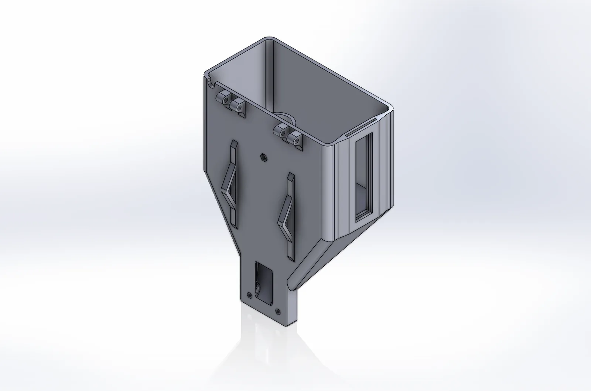
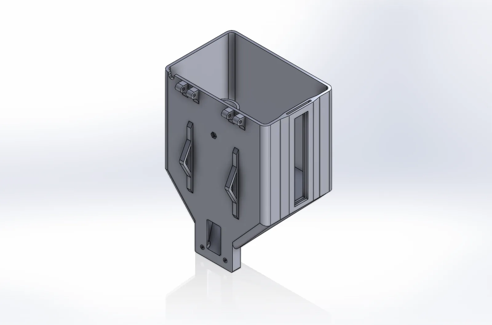
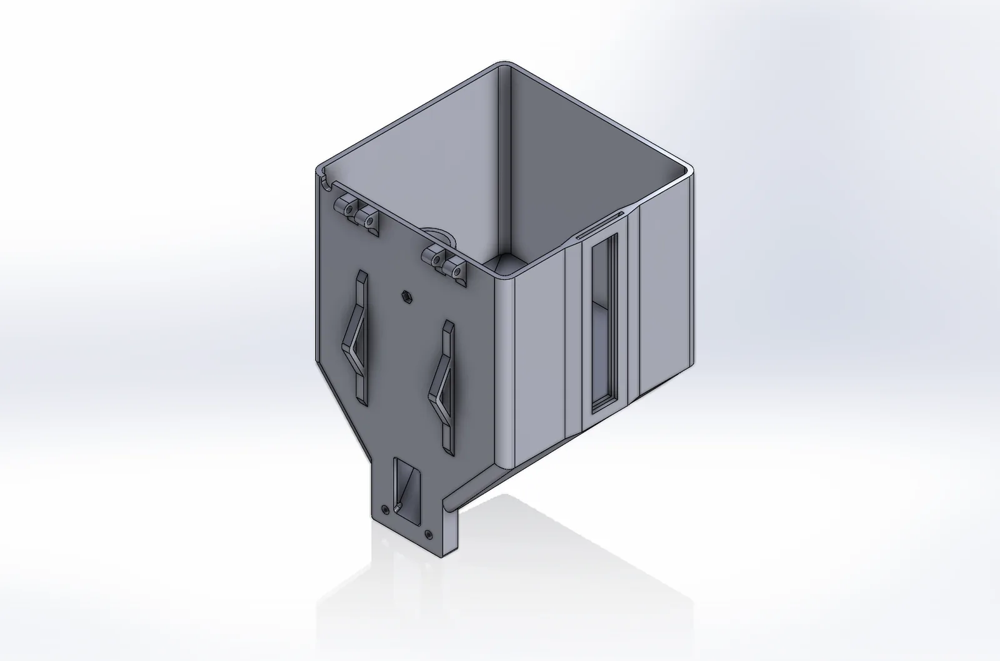
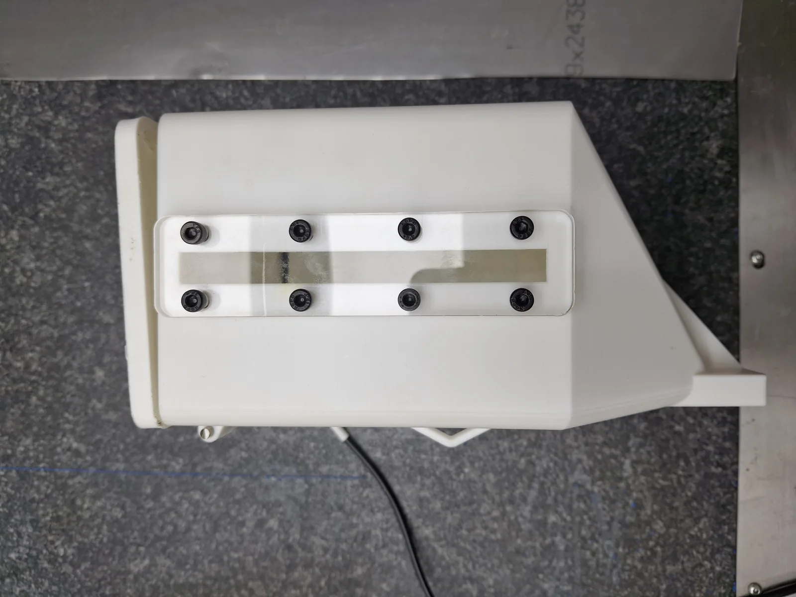

Consistent feeding
Guide pellets toward the screw inlet with fewer stagnant areas and a smoother outlet transition.
Reverse engineering, industrial automation
A configurable replacement hopper developed around an existing Flat Line On Demand machine to improve adhesive pellet flow, eliminate bridging, and add active motorized clearing.

The existing FLOD machine needed a more dependable way to deliver hot-melt adhesive pellets into its screw and extrusion feeding system.
Production trials showed that inconsistent flow and pellet blockage could interrupt feeding. The replacement had to fit the existing machine without altering the supplier’s core equipment, remain light enough for practical operator handling, and be straightforward to fabricate, commission and maintain.
“Production stoppages due to pellet bridging cost valuable line throughput. The replacement hopper introduced smooth internal funnels and active mechanical agitation within the exact original envelope.”
Guide pellets toward the screw inlet with fewer stagnant areas and a smoother outlet transition.
Preserve the existing mounting envelope and interfaces instead of redesigning the FLOD machine.
Allow operators to check pellet levels quickly without opening the hopper lid during production.
Integrate a compact agitator to clear bridging automatically without adding bulk or high power demands.
The hopper was developed against functional constraints derived directly from factory floor operation.
The hopper body was built using SolidWorks configurations to support varying machine heights and production volume demands while retaining common mounting features.

Reduced height configuration for low-overhead clearance applications.

Baseline capacity matching existing machine footprint.

High-volume reservoir for continuous adhesive bonding shifts.
